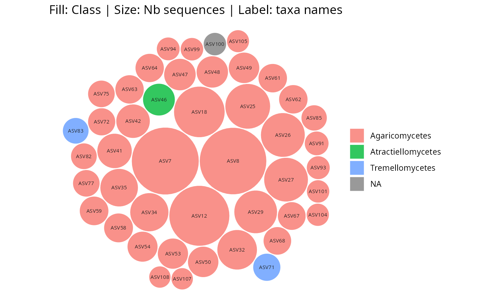

Circle-packed bubble plot of a phyloseq object using ggplot2
Source:R/gg_bubbles_pq.R
gg_bubbles_pq.Rd
Creates a static circle-packed bubble plot of taxa abundances from a phyloseq object using ggplot2. Circles can be packed in a circular layout (tight, default) or a square layout. Optionally facets the plot by a sample data variable, producing one bubble chart per level.
When diff_contour = TRUE together with facet_by, all pairwise
comparisons between facet levels are shown side by side using
patchwork. For each pair (A vs B), taxa unique to A are highlighted
with A's colour and taxa unique to B with B's colour. Shared taxa receive
a transparent contour, making it easy to spot which taxa are exclusive to
each group.
Migrated from comparpq::gg_bubbles_pq() (single-phyloseq variant —
list_phyloseq support was removed; use comparpq::gg_bubbles_pq() for
multi-object comparisons).
gg_bubbles_pq(
physeq,
rank_label = "Taxa",
rank_color = "Family",
rank_contour = NULL,
layout = c("circle", "square"),
facet_by = NULL,
log1ptransform = FALSE,
min_nb_seq = 0,
label_size = 2,
label_color = "grey10",
show_labels = TRUE,
border_color = "white",
border_width = 0.5,
alpha = 0.8,
npoints = 50,
ncol_facet = NULL,
return_dataframe = FALSE,
diff_contour = FALSE,
diff_contour_colors = c("#E41A1C", "#377EB8", "#4DAF4A", "#984EA3"),
diff_border_width = 1.5,
show_title = TRUE
)Arguments
- physeq
(required) A phyloseq::phyloseq object.
- rank_label
(character, default
"Taxa") Column in@tax_tableto label circles. When"Taxa", taxa names are used.- rank_color
(character, default
"Family") Column in@tax_tableto colour circles.- rank_contour
(character, default
NULL) Column in@tax_tableto colour circle borders. WhenNULL,border_coloris used uniformly. Ignored whendiff_contour = TRUE.- layout
(character, default
"circle") Packing layout:"circle"for tight circular packing,"square"for a square boundary.- facet_by
(character, default
NULL) Column name from@sam_datato facet the plot. One bubble chart is produced per level.- log1ptransform
(logical, default
FALSE) IfTRUE, sequence counts are log1p-transformed before computing circle sizes.- min_nb_seq
(integer, default
0) Minimum sequence count; taxa below this threshold are dropped.- label_size
(numeric, default
2) Font size for labels inside circles.- label_color
(character, default
"grey10") Colour for label text.- show_labels
(logical, default
TRUE) IfTRUE, labels are shown inside circles that are large enough to fit text.- border_color
(character, default
"white") Colour for circle borders (used whenrank_contour = NULL).- border_width
(numeric, default
0.5) Width of circle borders.- alpha
(numeric, default
0.8) Transparency of circle fill.- npoints
(integer, default
50) Vertices per circle polygon. Higher values produce smoother circles.- ncol_facet
(integer, default
NULL) Number of columns forggplot2::facet_wrap(). Ignored whendiff_contour = TRUE.- return_dataframe
(logical, default
FALSE) IfTRUE, return the data frame used for plotting instead of a ggplot object. Ignored whendiff_contour = TRUE.- diff_contour
(logical, default
FALSE) IfTRUEandfacet_byis set, produces pairwise comparison panels for all facet-level pairs using patchwork. Taxa unique to each side are highlighted with a distinct contour colour; shared taxa receive a transparent contour.- diff_contour_colors
(character vector, default
c("#E41A1C", "#377EB8", "#4DAF4A", "#984EA3")) Border colours for taxa unique to each facet level. Recycled if shorter than the number of levels.- diff_border_width
(numeric, default
1.5) Border width indiff_contourmode.- show_title
(logical, default
TRUE) IfTRUE, adds an informative title describing the fill, contour, size, and label mappings.
Value
A ggplot2::ggplot object, a patchwork object (when
diff_contour = TRUE), or a data.frame (when return_dataframe = TRUE).
See also
comparpq::gg_bubbles_pq() for the multi-phyloseq variant.
Examples
# \donttest{
data(data_fungi_mini, package = "MiscMetabar")
gg_bubbles_pq(physeq = data_fungi_mini, rank_color = "Class")

gg_bubbles_pq(
physeq = data_fungi_mini, rank_color = "Class",
rank_contour = "Order"
)
 gg_bubbles_pq(
physeq = data_fungi_mini, rank_color = "Class",
layout = "square"
)
gg_bubbles_pq(
physeq = data_fungi_mini, rank_color = "Class",
layout = "square"
)
 # }
if (FALSE) { # \dontrun{
# Faceted by sample variable
data(data_fungi, package = "MiscMetabar")
gg_bubbles_pq(
physeq = data_fungi, rank_color = "Order",
facet_by = "Height", min_nb_seq = 100
)
# Pairwise diff_contour
gg_bubbles_pq(
physeq = data_fungi, rank_color = "Order",
facet_by = "Height", min_nb_seq = 100,
diff_contour = TRUE, show_labels = FALSE
)
} # }
# }
if (FALSE) { # \dontrun{
# Faceted by sample variable
data(data_fungi, package = "MiscMetabar")
gg_bubbles_pq(
physeq = data_fungi, rank_color = "Order",
facet_by = "Height", min_nb_seq = 100
)
# Pairwise diff_contour
gg_bubbles_pq(
physeq = data_fungi, rank_color = "Order",
facet_by = "Height", min_nb_seq = 100,
diff_contour = TRUE, show_labels = FALSE
)
} # }